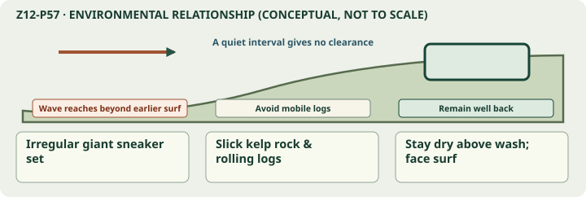

Z12-P57 · Extreme environments · New manuscript
Respect sneaker waves, slippery wet kelp ledges and surging breakwater jetties
Prevent sudden sweep-offs into cold pounding surf along rocky shores, steep beaches and piers.
When it applies · Pacific, Atlantic and Great Lakes rocky shores, steep beaches, sea walls and concrete breakwaters.
Equipment · High dry observation stance, sturdy gripping footwear and never turning your back to surf.

Actions
- Never turn your back on the ocean or Great Lakes surf—irregular **sneaker waves** surge suddenly far higher up beaches and rocky ledges than the previous twenty calm waves, dragging victims into cold swirling undertow.[X06, X14, X02]
- Stay off dark wet algae- or kelp-slick coastal boulders, steep surf-washed drift logs (which roll violently in shallow wash with crushing weight) and storm-swept piers or concrete jetties.[X06, X15, T01]
- Watch wave sets calmly for several full minutes from well above the highest wet sand/rock stain before choosing any shore stop or fishing vantage.[X06, X15, ED]
Failure recognition · Standing on a wet black rocky ledge or climbing onto a large beach driftwood log with your back to the surf for a photo when a sneaker set sweeps over.[X06, X02, T01]
Verify · Confirm your standing spot lies dry above the highest recent wave-wash stain and keep eyes angled toward incoming wave sets.[X06, X15, ED]
Stop or change course · Heavy swell advisories, breaking waves washing over jetties or slick dark tidal rock demand moving well back onto high dry shore immediately.[X06, X15]
Evidence and editorial notes
- T01 · American Red Cross · First Aid Steps (current web edition)
- Section: First Aid Steps > Check the scene; check the person · Conditions: Lay responder in United States; assess safety before contact
Support: Check scene safety, responsiveness, breathing and immediately life-threatening conditions.
Limitations: Lay guidance does not replace advanced clinical or rescue protocols. · Conflicting evidence: None; universal first-response opening gate.
Editorial note: Anchors scene-safety-first rule across Z01. · Specialist reviewer: EMS and wilderness medicine
Primary source · checked 2026-11-24 - X02 · Minnesota DNR · Cold Water Safety (current web edition)
- Section: Cold Water Safety > Cold Shock, Swim Failure and Hypothermia · Conditions: Immersion in water below 70°F (especially below 50°F / winter ice water)
Support: Cold-water immersion triggers immediate involuntary gasp and hyperventilation (cold shock in the first 1–3 minutes), followed by rapid swimming failure (within ~10–15 minutes) before core hypothermia develops; wearing a fastened life jacket keeps the airway above water.
Limitations: Strong swimmers drown rapidly from cold shock and muscle incapacitation without flotation. · Conflicting evidence: Refutes myth that hypothermia is the only immediate cold-water killer.
Editorial note: Core physiological evidence for Z12 ice-breakthrough and maritime immersion cards. · Specialist reviewer: Cold-water rescue and wilderness medicine
Primary source · checked 2026-11-24 - X06 · NOAA NWS · Marine Weather Services (current web edition)
- Section: Marine Weather Services > Small Craft Advisories, Gale Warnings and Sea State · Conditions: Coastal, Great Lakes and open-water marine zones
Support: Marine forecasts issue Small Craft Advisories, Gale, Storm and Hazardous Seas Warnings; wind opposing tide or shallow shoals steepens breaking waves dramatically faster than inland forecasts indicate.
Limitations: Local fetch and headland funneling can exceed regional zone forecasts. · Conflicting evidence: None; integrates with NOAA-NWR marine channels.
Editorial note: Guides marine weather thresholds and coastal-craft abort cards in Z12. · Specialist reviewer: Marine meteorology and maritime safety
Primary source · checked 2026-11-24 - X14 · NWS · Rip Current Safety (current web edition)
- Section: Rip Current Safety > Recognizing and Escaping Rip Currents · Conditions: Surf beaches, Great Lakes piers/sandbars and ocean coastlines
Support: Rip currents are narrow fast-moving channels pulling seaward; do NOT fight directly against the current—stay calm, float or tread water, swim parallel to the shoreline out of the narrow channel and angle back to shore (or float and wave/yell for help).
Limitations: Fighting a rip current straight toward shore exhausts strong swimmers rapidly and causes drowning. · Conflicting evidence: None; aligns with NOAA-COAST and NWS-RIP-SCI.
Editorial note: Core coastal surf and Great Lakes rip-current card evidence. · Specialist reviewer: Coastal rescue and water safety
Primary source · checked 2026-11-24 - X15 · NOAA NOS · Tides and Water Levels Education Tutorial (current web edition)
- Section: Tides and Water Levels > Tidal Range, Cutoffs and Currents · Conditions: Ocean coastlines, sea caves, tidal flats and rocky headlands
Support: Tidal cycles raise water levels rapidly along shallow flats, narrow coves and rocky headlands, trapping hikers against cliffs and generating strong reversing currents in inlets; verify local tide tables before entering coastal routes.
Limitations: Wind-driven storm surge and king tides push water well above normal predicted high-tide marks. · Conflicting evidence: None; pairs with NOAA-COAST.
Editorial note: Grounds tidal-cutoff, headland and mudflat planning cards in Z12. · Specialist reviewer: Coastal navigation and marine safety
Primary source · checked 2026-11-24
Source lineage · NWS coastal/marine safety and NOAA NOS; new manuscript · Classification · New manuscript.